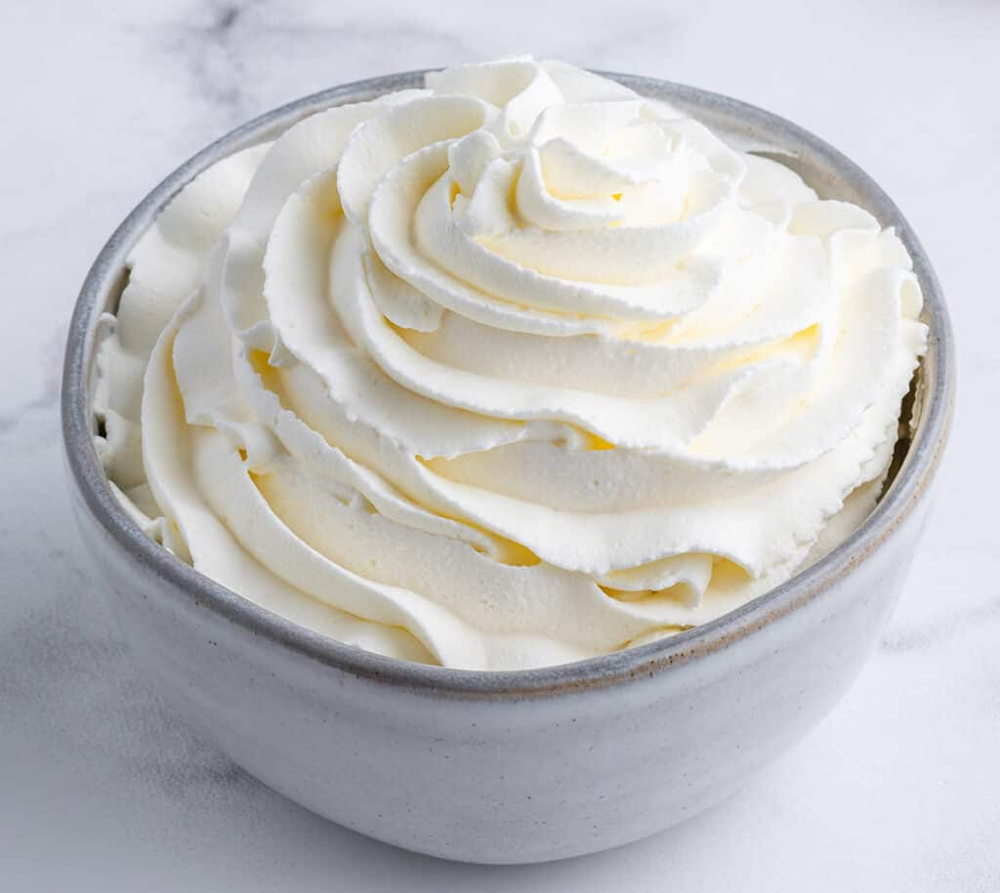

Whipped Topping

Description
This recipe is as delicious as it is simple. It's a 3-ingredient no fuss, no muss delight! A wonderful pairing for ice creams, cakes, puddings, and so much more,
you'll wonder where it's been your whole life!
Whipped topping is so versatile and takes on any flavoring you add to it, so it's completely customizable! Just swap in your favorite extract(s). You do you!
Ingredients
- 1 pint (2 cups) heavy whipping cream
- 1/2 cup powdered sugar
- 1 tsp extract of choice (I use 1/2 tsp pure vanilla extract and 1/2 tsp almond extract)
Directions
- (Optional) Chill the mixing bowl. Place the mixing bowl in the fridge to come down to temperature. While this step isn't required per se,
it can help your whipped topping stay stable for longer.
- Add all of the ingredients into a mixing bowl. A stand mixer makes this process fool proof, but a hand mixer can also do the trick!
- Beat the mixture on a low speed until the powdered sugar is incorporated.
- Gradually increase the speed to high.
- Once soft peaks begin to form, stop the mixer, and scrape down the sides.
- Continue mixing until the desired consistency is reached, but be careful to not over mix! This will turn your beautiful whipped topping
into a lumpy butter!
Recommended Pairings